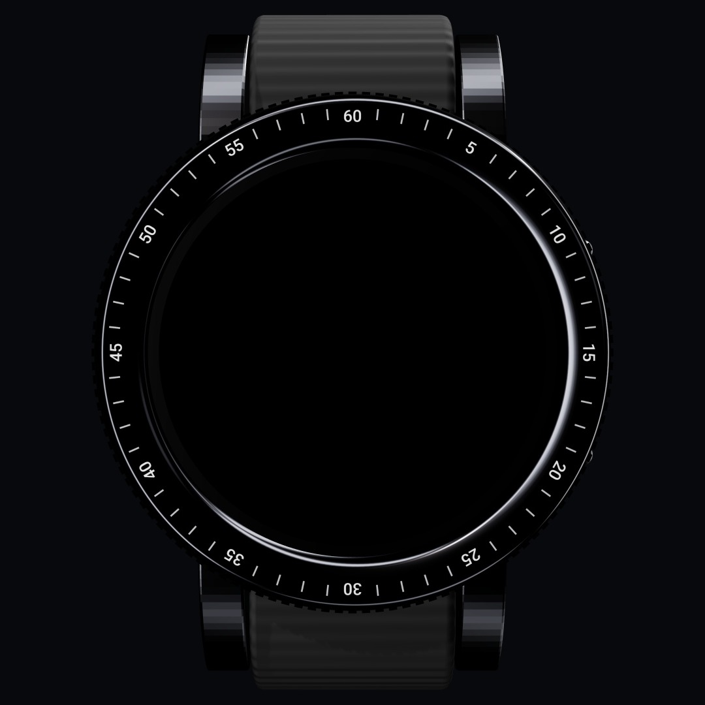
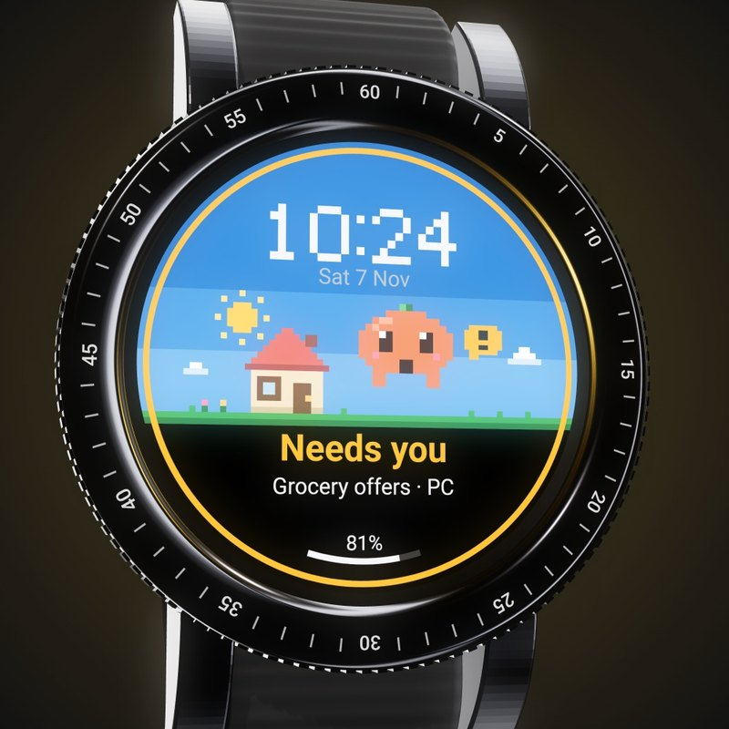
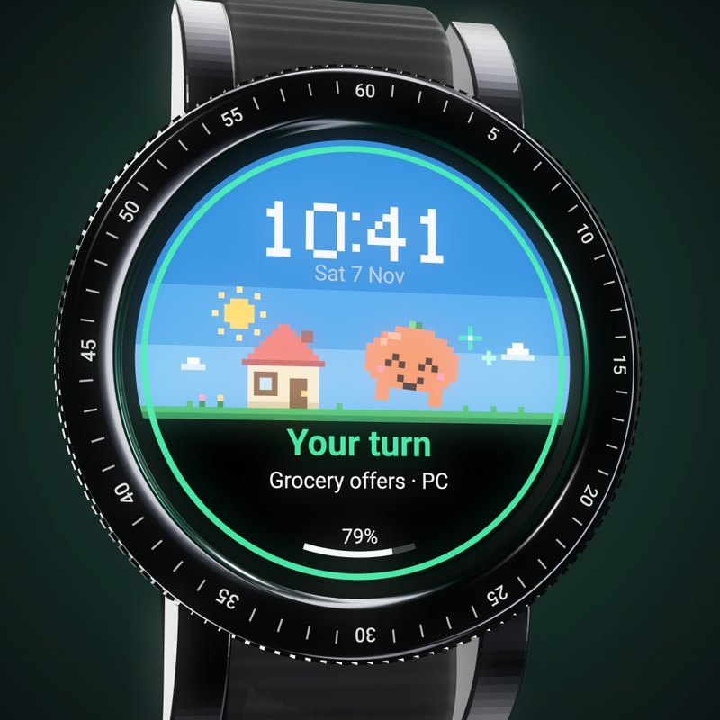
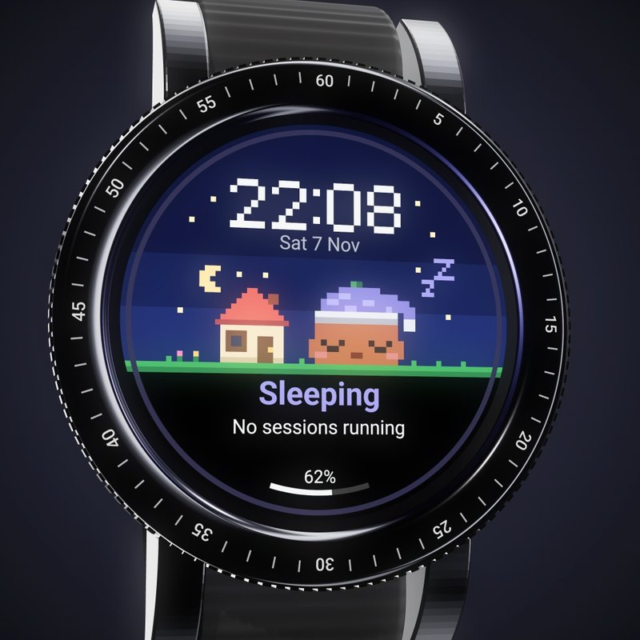
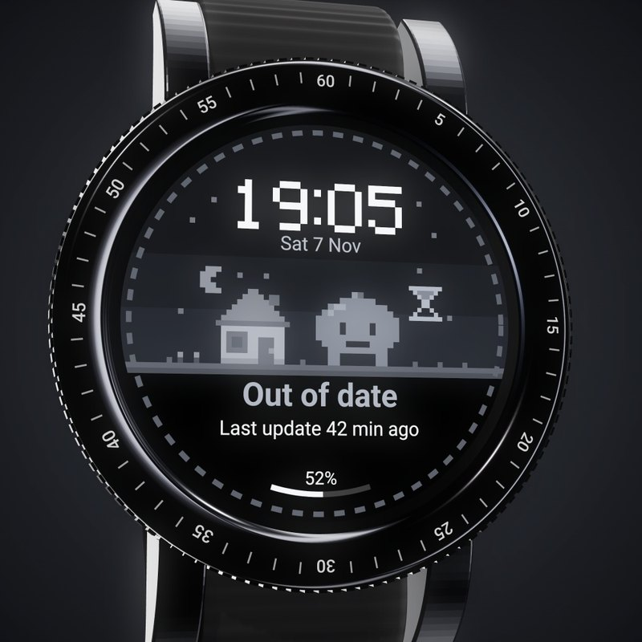
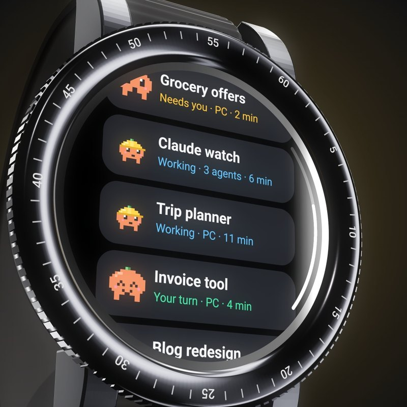
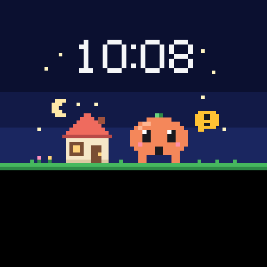
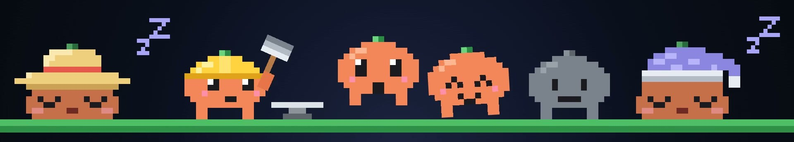

Working
Hammer, anvil, sparks. It names the session and counts its agents.
Working, needs you, your turn, or fast asleep. One look at your wrist tells you which, so you never come back to find Claude has waited 20 minutes for you to press 1.
Open source. Runs on your own relay. Built for the Galaxy Watch4 Classic.

This is the real face, running live. Try its moods:
Hammer, anvil, sparks. It names the session and counts its agents.

A permission or a question is waiting. It hops, and wakes a sleeping watch.

Claude has finished. It dances for ten minutes, then goes to sleep.

Nothing running. A sun hat by day, a nightcap after 18:00.

No push for 40 minutes while busy. It says so, and never shows old news as new.
Tap the face for every session Claude has running: what it's doing, how many agents it has, and for how long. On the Classic, the rotating bezel scrolls the list.

Your hooks, your relay, your watch. You run the small relay yourself, and each session's state, folder name and agent count go through your own Firebase project. Your prompts and code don't.

Your watchIt's built and tested on a Galaxy Watch4 Classic, and nothing else yet. Other round Wear OS watches should be close, since it's all drawn for 450 px and scaled. An Apple Watch or Garmin needs a new watch app, but the relay and hooks can stay.
Either way, Claude can do the work. Open the repo in Claude Code and tell it what you have.
Adapt Claude watch to my Pixel Watch 3. Keep the relay and hooks. Change what this watch needs, and tell me what you couldn't test.
